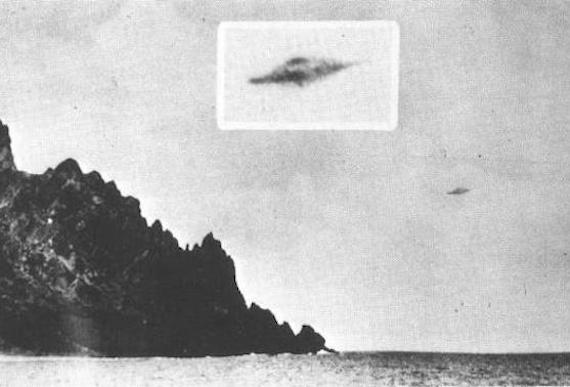
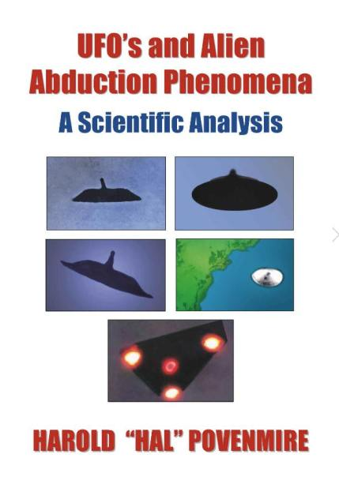
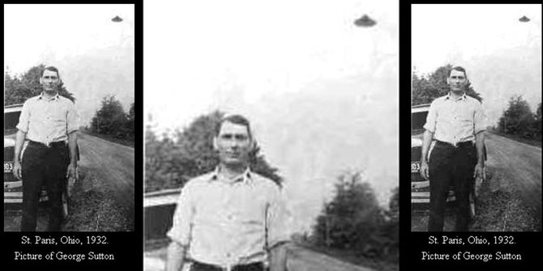

仮説：以下の有名な UFO 写真の正体はどれも自転する orb だ
 


履歴
(2022-10-16) 追記 (2022-09-18) 追加 (2022-07-14) 作成
前置き
- 数か月前から「UFO/ET の正体は意識障害だ」という仮説を私は提唱している。この仮説を主張するためには、その反例となりそうな主要な事例について、それが反例とはなっていない（＝仮説が成立している）という説明が必要。 - 反例となりそうな事例として、比較的くっきりと UFO の形状が写っている UFO 写真が挙げられる。それらの写真には昔から有名なものも含まれている。 - それらの写真を改めて見直した結果、どれもいわゆる UFO ではなく、「自転する orb」（＝自然現象）だという結論に至った。 - 以下、未整理。自転する orb だと判断すべき UFO 写真
- 以下の写真が捏造ではないと仮定する。 … … … …


 Photographs Showing UFO Hovering Over A Forest Dubbed 'Best We Have'
Photographs Showing UFO Hovering Over A Forest Dubbed 'Best We Have'


その判断の根拠
… … … … (2022-07-14)
これらの有名な UFO 写真の正体も高速回転する orb なのでは？
前置き
- 偶然見かけた本の表紙の写真に登場している UFOs が下。(2022-10-16 追記 begin) - 左上の UFO 写真は実際はサイド・ミラーだという記事（下）を Web で見かけた。- orb が白昼では黒く見えたり銀色に見えたりするという証言は下の過去記事で取り上げた。 Derrell Sims : 生きたまま皮を剥がされて戻ってきた abductee の実例がある (2022-07-01)2004年、研究者のジョエル・カーペンター（1959-2014）は、マクミンビルの写真に関するウェブサイトを作成し、物体が架線の真下にあり、カメラの近くにあったことを非常にうまく説明した。彼は、その物体が古いトラックの鏡であることを示唆している。 (2022-10-16 追記 end)
In 2004, researcher Joel Carpenter (1959-2014) created a website on the McMinnville photos, making a very good case that the object was directly beneath the overhead wires, and close to the camera. He suggests that the object was a mirror from an old truck. ref: https://badufos.blogspot.com/2014/09/special-report-trent-ufo-photos-best-of.html
結論
- 上の右下の有名な UFO 写真(*1)を含め、4枚の写真の UFO の正体は高速回転する orb だ…これが私の判断。(*1)
- Jacques Vallee がこの写真のネガを取り寄せて詳しく分析し、この件で論文を発表している。下の過去記事で取り上げた。 1971年9月4日、コスタリカ：政府の航空測量写真に鮮明な 巨大 UFO （途中：その4） (2019-11-03)関連
仮説：以下の有名な UFO 写真の正体はどれも高速回転する orb だ （途中1） (2022-07-14)
- 下の本は表紙を目にしただけで内容は全く知らない。"UFO's and Alien Abduction Phenomena: A Scientific Analysis" という本のタイトルと、著者が NASA の広報で仕事をしているという情報だけで内容は陳腐なものであり、読むのは時間とカネの無駄だと断言してよい筈…w Harold Povenmire "UFO's and Alien Abduction Phenomena" A Scientific analysis UFO's and Alien Abduction Phenomena: A Scientific Analysis Kindle Edition by Harold "Hal" Povenmire (Author) Format: Kindle Edition Amazon の著者紹介から： DeepL 訳
著者について 1939年、オハイオ州コロンバスに生まれ、幼少期をアマチュア天文家として過ごす。1948年から本格的な流星観測を始め、ペルセウス座流星群を66年連続で観測する。この間、2000個以上の流星を撮影し、イプシロンペガシス流星群も発見している。ジョージア州のテクタイトが非常に珍しく、ストリーン・フィールドの地図が作成されていないことに気づき、1970年からこの作業に取り組んだ。現在までに、ストローン・フィールドの面積は約500平方マイルから12,500平方マイル以上に拡大し、ジョージア産テクタイトの数は約200個から3,000個に増加しました。ポーブンミアの著書には、『火の玉、流星、隕石』、『カーニバル岬の反射』、『宇宙接近遭遇百科』、『グレイズ観測者のハンドブック』、『テクタイト』などがある。ジョージア産テクタイトを扱った『A Cosmic Puzzle』などがある。月の研究がポーベンミアの人生を支配してきたため、宇宙工学と宇宙技術の研究は最も重要なものであった。オハイオ州立大学で学士号を取得する傍ら、「ムーンウォッチ計画」と「マーキュリー計画」のためのベーカー・ナン衛星追跡カメラに携わりました。オハイオ大学で修士号を取得後、「アポロ計画」に携わりました。彼のエンジニアとしての仕事の中には、アポロ11号ミッションで月面の「静かの海」に座っているものもあります。その後、スペースシャトルにも携わりました。現在、フロリダ工科大学で天文学、宇宙科学、宇宙工学の分野で博士号を取得し、ケネディ宇宙センターで報道陣と一緒に仕事をしている。小惑星 (12753) Povenmire と (15146) HalPov は、惑星天文学に貢献したHalとKatie Povenmireに敬意を表するものである。--このテキストはペーパーバック版です。 Product details ASIN : B01MFDAEKX Publisher : Blue Note Publications (October 26, 2016) Publication date : October 26, 2016 Language : English File size : 1432 KB Simultaneous device usage : Unlimited Text-to-Speech : Enabled Screen Reader : Supported Enhanced typesetting : Enabled X-Ray : Not Enabled Word Wise : Enabled Print length : 282 pages Lending : Enabled (2022-09-08)
1932-05, Ohio: George Sutton と写真に写り込んだ UFO の正体
前置き
- 有名な古い UFO 写真。 - 訳は DeepL 。引用
Date: May ?, 1932 Location: St. Paris, Ohio Time: Summary: A picture of George Sutton taken near mid-day shows an unidentified flying object over Sutton’s left shoulder in this photograph. A vintage automobile with a 1932 license plate on the front bumper is in the photo. Nobody has been able to account for the dark object seen this picture. It could not have been a street lamp, simply because there were no street lamps there at that time. There are no power poles or power lines visible anywhere in this picture. This picture of George Sutton of St. Paris, Ohio was taken near midday on a summer noon. We can see that it was in 1932 from the license plate on the automobile in the photo that accompanied this shot. 日付 1932年5月 場所 オハイオ州セント・パリ 時間 概要：正午近くに撮影されたジョージ・サットンの写真で、サットンの左肩の上に未確認飛行物体が写っています。フロントバンパーに1932年のナンバープレートが付いたビンテージ自動車が写っています。この写真に写っている暗い物体を説明できる人はいません。街灯であるはずはないのだが、当時は街灯がなかったからだ。この写真には電柱や電線はどこにも写っていません。 オハイオ州セント・パリのジョージ・サットンのこの写真は、夏の正午近くに撮られました。 この写真に写っている自動車のナンバープレートから、1932年であることがわかる。
 A man named George Sutton was probably one of the luckiest man on earth, because he had his picture taken with an UFO in May 1932 in St. Paris, Ohio. An object like a flying saucer appeared suddenly in the sky. Many thought this mysterious object was a street light. But the theory was unproven because there was no light or power pole seen in the picture. The owner of this photo also stated that there was no electric street lights along this path in 1932. Finally, none could explain explain a dark object seen on the upper left side of the photo. We could exactly know that the picture was taken in 1932 by seeing the car license plate in this picture. 932年5月、オハイオ州セント・パリでUFOと一緒に写真を撮ったジョージ・サットンという男は、おそらく地球上で最も幸運な男の一人であった。 空飛ぶ円盤のような物体が突然空に現れました。多くの人はこの不思議な物体を街灯だと思った。しかし、写真には電灯も電柱も写っていなかったので、この説は証明されなかった。 この写真の持ち主も、1932年当時、この道には街灯がなかったと述べている。最後に、写真の左上に写っている黒い物体を説明することはできなかった。この写真に写っている車のナンバープレートを見れば、この写真が1932年に撮影されたことが正確にわかる。 ref: No Photoshop: 5 oldest photos of UFO sightings - https://en.brilio.net/news/no-photoshop-5-oldest-photos-of-ufo-sightings-5-oldest-photos-of-ufo--151202p.htmlコメント
- この写真の UFO が捏造で無いと仮定した場合、この UFO の正体は自転する orb だろう。 - 現像処理ミスやフィルム不良の可能性も皆無ではないが、それが原因でこのような形状が写り込んだという事例は知らないし、そのメカニズムも思いつかない。現像処理ミスやフィルム不良ならもっと広範囲、かつ滲んだような形状となるのが普通。 (2022-09-17)
WWII 当時の写真に写っていた UFO
前置き
- 画像検索で目にした写真。 - 訳は DeepL 。引用
From paranormaltn.blogspot.com Paranormal Stories From Tennessee WWII UFO? My family and I found some old WWII pictures in the trash and this photo really amazed us. It shows what looks like a UFO above the man getting his picture taken. I don't think he knew it was there! --Ivan L. Rosesjewelz より パラノーマルtn.blogspot.com テネシー州の超常現象 第二次世界大戦中のUFO？私たち家族は、ゴミ箱の中から第二次世界大戦中の古い写真を見つけました。この写真には、写真を撮られている人の上にUFOのようなものが写っています。彼はそれがそこにあることを知らなかったと思います。--Ivan L. Rosesjewelzコメント 1
- この写真の UFO が捏造で無いと仮定した場合、この UFO の正体も自転する orb だろう。特徴的な上部の斜めに傾いた突起が発生する機序については過去記事で述べた。 - 現像処理ミスやフィルム不良の可能性については直前の記事で述べた。コメント 2
- 両足を若干広げ、両手を後ろにするのは軍人の姿勢だが、帽子を斜めにかぶっているのは、粋の表現なのだろうか。 (2022-09-17)
初出
仮説：以下の有名な UFO 写真の正体はどれも高速回転する orb だ （途中1） (2022-07-14)
この記事の完了度: